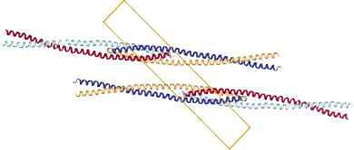
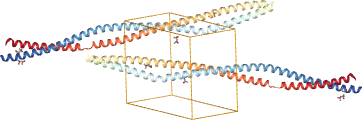

Macromolecular models¶
In this section, we show how to handle structural models of biomolecules.
Models from a single file (PDB, mmCIF, etc.) are stored in the Structure
class. Gemmi provides basic functions to access and manipulate the structure
and its associated metadata.
On top of this, it has more complex functions, such as neighbor search
(taking into account crystallographic and non-crystallographic symmetry),
calculation of dihedral angles, removal of ligands from a model, etc.
Structure contains one or multiple alternative models (class Model),
a model contains chains (class Chain), a chain contains residues (Residue),
and a residue contains atoms (Atom).
On naming
While chain and residue are not accurate terms when referring to ligands and waters, this nomenclature is the most common. An alternative nomenclature, polymer → monomer → atom, has the same problem. PDBx/mmCIF uses more general but hard to decipher terms: entity and struct_asym (structural component in the asymmetric unit) instead of chain, and chem_comp (chemical component) for residue/monomer.
Let’s start with a simple example that illustrates the structure → model → chain → residue → atom hierarchy. The code below iterates over all models, chains, residues, and atoms, mutating methionine residues (MET) to selenomethionine (MSE).
#include <gemmi/model.hpp>
void met_to_mse(gemmi::Structure& st) {
for (gemmi::Model& model : st.models)
for (gemmi::Chain& chain : model.chains)
for (gemmi::Residue& res : chain.residues)
if (res.name == "MET") {
res.name = "MSE";
for (gemmi::Atom& atom : res.atoms)
if (atom.name == "SD") {
atom.name = "SE";
atom.element = gemmi::El::Se;
}
}
}
import gemmi
def met_to_mse(st: gemmi.Structure) -> None:
for model in st:
for chain in model:
for residue in chain:
if residue.name == 'MET':
residue.name = 'MSE'
for atom in residue:
if atom.name == 'SD':
atom.name = 'SE'
atom.element = gemmi.Element('Se')
Alternative conformations
The hierarchy above is oversimplified if we consider that models can include alternative atom locations and microheterogeneities (point mutations – alternative residues).
What are reasonable ways of presenting alternative conformations? We can:
Group together atoms from the same conformer. This is relatively simple and particularly convenient when a user wants to see just one conformer and ignore the rest. But it’s not good for editing a model.
Group together alternative locations of the same atoms, as well as alternative residues (for instance, cctbx.iotbx has residue-groups and atom-groups). This is rather complex. Reportedly, “about 90% of the development time invested into iotbx.pdb was in some form related to alternative conformations”.
Leave it to the user (e.g. mmdb and Clipper).
In Gemmi we use a mix of these approaches (which is also not ideal). The user can work with the basic (model-chain-residue-atom) hierarchy and handle the altloc field manually (like in mmdb). However, we also have functions that ignore all but the first conformation (inspired by BioPython) and lightweight proxy objects ResidueGroup and AtomGroup that group alternatives (inspired by iotbx).
Coordinate files¶
Gemmi supports the following coordinate file formats:
mmCIF (PDBx/mmCIF),
PDB (with popular extensions),
mmJSON.
It can also read coordinates from the Chemical Components Dictionary (CCD) and the Refmac monomer library. These aren’t coordinate files but typically include example coordinates of a single residue.
Reading any files¶
This section shows how to read a coordinate file in Gemmi,
regardless of the format.
In the following sections we’ll delve into the details of each format.
Afterward, we’ll move on to working with structural models
(objects of type Structure that you can see in this section).
Let’s read a coordinate file and print the number of models it contains:
#include <gemmi/mmread.hpp>
// ...
gemmi::Structure st = gemmi::read_structure_file(path);
std::cout << "Model count: " << st.models.size() << std::endl;
>>> st = gemmi.read_structure(path)
>>> st
<gemmi.Structure ...>
>>> print('Model count:', len(st))
Model count: 1
Warning
Call st.setup_entities() after reading a file.
It’s almost always needed (perhaps it should be the default).
It is not necessary when you read files from the official
PDB archive that are fully annotated, or if your code doesn’t use
any functions for which subchains and entities matter.
But the code you write may end up being used on file from different programs
and then it may behave differently.
setup_entities() uses heuristics to substitute missing annotations,
making the behavior more consistent.
Not calling in setup_entities() is the most common cause of problems
reported for Gemmi.
Gemmi is built with either the zlib or zlib-ng library. If a file read by Gemmi is compressed with gzip (extension .gz), it can be uncompressed on the fly. Note that all reading functions may throw exceptions. In this example, we catch them:
// prefer this function to the previous one, mmread.hpp takes longer to compile
#include <gemmi/mmread_gz.hpp>
// ...
try {
gemmi::Structure st = gemmi::read_structure_gz(path);
} catch (std::runtime_error& e) {
std::cout << "Oops. " << e.what() << std::endl;
}
>>> # It's the same function. To keep it simple, Python bindings
>>> # have only equivalents of C++ _gz functions, but without _gz.
>>> try:
... st = gemmi.read_structure(path)
... except (RuntimeError, IOError) as e:
... print(f'Oops. {e}')
Optionally, these functions can take the format as an argument. One of:
CoorFormat.Unknown– guesses the format from the file extension (default),CoorFormat.Detect– guesses the format from the file content (PDB is assumed if the content is neither CIF nor JSON; it also recognizes monomer (ligand/CCD) files),CoorFormat.Pdb– PDB,CoorFormat.Mmcif– mmCIF,CoorFormat.Mmjson– mmJSON,CoorFormat.ChemComp– a CIF file with ligand description, from CCD or a monomer library. This format has the same extension as mmCIF files, so the format needs to be specified as eitherDetectorChemComp.
gemmi::Structure st = gemmi::read_structure_gz(path, gemmi::CoorFormat::Detect);
>>> st = gemmi.read_structure(path, format=gemmi.CoorFormat.Detect)
If you know the format of the files you will read, you can use a function
specific to that format. For example, the next section
shows how to read a PDB file using read_pdb_file(path).
Users of the MMDB2 library from the CCP4 suite can convert between
mmdb::Manager and gemmi::Structure using the functions copy_to_mmdb()
and copy_from_mmdb() from <gemmi/mmdb.hpp>.
Discontinuous chains¶
The usual order of atoms in a file is
either by chain (A-polymer, A-ligands, A-waters, B-polymer, B-ligands, B-waters)
or by chain parts (A-polymer, B-polymer, A-ligands, B-ligands, A-waters, B-waters).
In the latter case (example: 100D), chain parts with the same name are either merged automatically (MMDB, BioPython) or left as separate chains (iotbx).
In Gemmi, we support both ways. Chains are first read separately
and can then be merged by calling Structure::merge_chain_parts().
However, in the Python interface read_structure() merges chains by default
(for backward compatibility). To get atoms in the original order, add
the argument merge_chain_parts=False.
PDB format¶
The PDB format evolved from the 1970s to 2012. Nowadays the PDB organization uses PDBx/mmCIF as the primary format, and the legacy PDB format is frozen.
Note
The PDB format specification aims to describe the format of files
generated by the wwPDB. It does not aim to specify a format that can
be used for data exchange between third-party programs.
Following the specification literally is neither useful nor possible.
For example, the REVDAT record is mandatory, but using it makes sense
only for files released by the PDB.
Therefore no software generates files conforming to the specification
except for the wwPDB software (and even this one is not strictly
conforming: it writes 1555 in the LINK record for the identity operator
while the specification requires leaving these fields blank).
Do not read too much into the specification.
Gemmi aims to read all flavors of PDB files that are in common use in macromolecular crystallography and related fields. We support the following extensions (by default):
two-character chain IDs (columns 21 and 22),
segment ID (columns 73-76) from PDB v2,
hybrid-36 encoding of sequence IDs that exceed 9999 (the residues assigned such IDs are usually waters),
hybrid-36 encoding of serial numbers for more than 99,999 atoms,
tilde-hetnam extension for extended CCD codes (residue names).
Gemmi interprets more PDB records than most programs and libraries, but supporting all the records is not a goal. The following interpreted records can also be converted between PDB and mmCIF, unless noted otherwise:
HEADER
TITLE
KEYWDS
EXPDTA
NUMMDL
AUTHOR (read-only, i.e. only in PDB -> mmCIF conversion)
REMARK 2
REMARK 3 (read-only)
REMARK 200/230/240 (read-only)
REMARK 290 (partly-read, but not by default)
REMARK 300 (read-only)
REMARK 350
REMARK 800 / SITE
DBREF/DBREF1/DBREF2
SEQRES
MODRES
HET (write-only)
HELIX
SHEET
SSBOND
LINK
CISPEP
CRYST1
ORIGXn
SCALEn
MTRIXn
MODEL/ENDMDL
ATOM/HETATM
ANISOU
TER
CONECT (no equivalent in mmCIF, but there is a way to read/write it)
END
Although the PDB format is widely used, some of its features can be easily overlooked. Moreover, not all programs write and interpret PDB records in the same way. The rest of this section is devoted to such details.
Let us start with the list of atoms:
HETATM 8 CE MSE A 1 8.081 3.884 27.398 1.00 35.65 C
ATOM 9 N GLU A 2 2.464 5.718 24.671 1.00 14.40 N
ATOM 10 CA GLU A 2 1.798 5.810 23.368 1.00 13.26 C
Standard residues in protein or nucleic acid polymers are marked as ATOM. Solvent, ligands, metals, carbohydrates, and everything else are marked as HETATM. But what about non-standard residues in a polymer? According to the wwPDB, they are HETATM, though some programs and crystallographers prefer to mark them as ATOM. It is better not to rely on either convention. In particular, removing ligands and solvent cannot be done by simply removing all the HETATM records.
The next field after ATOM/HETATM is the serial number of an atom. The wwPDB spec limits the serial numbers to the range 1–99,999, but the popular extension called hybrid-36 allows more atoms in the file by also using letters in this field. An alternative approach is to write longer serial numbers, trading the last two letters of HETATM and skipping the CONECT records. While we don’t explicitly support this, such files will be read correctly because the serial numbers are only used for interpreting the CONECT records.
Columns 13-27 describe the atom’s place in the hierarchy. In the example above, they are:
1 2
345678901234567
CE MSE A 1
N GLU A 2
CA GLU A 2
Here, the CE atom is in chain A, in residue MSE with sequence ID 1.
The atom names (columns 13-16) start with the element name, and as a rule, columns 13-14 contain only the element name. Therefore, Cα and calcium ion, both named CA, are aligned differently:
1 2
345678901234567
CA GLU A 2
CA CA A 101
This rule has an exception: when the atom name has four characters, it starts in column 13 even if it has a one-letter element code:
HETATM 6495 CAX R58 A 502 17.143 -29.934 7.180 1.00 58.54 C
HETATM 6496 CAX3 R58 A 502 16.438 -31.175 6.663 1.00 57.68 C
This often happens for hydrogens (names such as HH11).
Note that atom labeling was changed by the wwPDB in the 2000s. Before that, atom names were not required to begin with the element name; instead of HH11, we had 1HH1; the element could be read from the name. The separate element columns used nowadays were introduced in the wwPDB archive only in 2005. Before that, lines of PDB files in the archive ended with the PDB code and the line number:
ATOM 1 CA MET 1 -19.201 51.101 6.138 1.00 35.00 1GDR 109
ATOM 2 CA ARG 2 -17.008 48.871 4.008 1.00 35.00 1GDR 110
(Such a file can also be read by Gemmi, but only if you set the option
max_line_length=72 to ignore the trailing items.)
Not all programs used today write the element in separate columns (they don’t write line numbers but may output shorter lines), so inferring the element from the atom name is still important.
Columns 18-20 contain the residue name (CCD code). When the PDB ran out of
three-character codes in 2023, it started assigning codes with 5 characters,
which no longer fit into the PDB format. The tilde-hetnam extension addresses
this issue: a long CCD code is substituted with a 3-character alias
that starts with a tilde (~);
the original code is stored in columns 72-79 of the HETNAM record.
Columns 21-22 contain chain names. In the wwPDB spec, it’s only column 22, but it’s common to expand it into column 21 when there are too many chains for single-character naming. This collides with GROMACS’ PDB flavor, which uses custom 4-character residue names in columns 18-21, but that flavor is definitely less popular.
Columns 23-27 contain a sequence ID. It consists of a number (columns 23-26) and, optionally, also an insertion code (A-Z) in column 27:
ATOM 11918 CZ PHE D 100 -6.852 76.356 -23.289 1.00107.94 C
ATOM 11919 N ARG D 100A -9.676 74.726 -19.958 1.00105.71 N
...
ATOM 11970 CE MET D 100H -8.264 83.348 -19.494 1.00107.93 C
ATOM 11971 N ASP D 101 -11.329 81.237 -14.804 1.00107.41 N
Insertion codes are the opposite of gaps in numbering; both are used to make the numbering consistent with a reference sequence (and for the same reason the sequence number can be negative).
Another field that is blank for most of the atoms is altloc. It is a letter marking an alternative conformation (column 17, just before the residue name):
HETATM 557 O AHOH A 301 13.464 41.125 8.469 0.50 20.23 O
HETATM 558 O BHOH A 301 12.554 42.700 8.853 0.50 26.40 O
As mentioned before, handling alternative conformations adds a lot of complexity.
The last tricky thing in the atom list is TER records.
According to the specification and as used in the PDB archive,
TER marks the end of polymer (terminal carboxyl end for proteins,
3’ end for nucleic acids).
That’s how Gemmi interprets it by default. If the file uses TER records,
Gemmi can automatically setup entities (this can be later overwritten,
see add_entity_types()).
Unfortunately, not all programs write TER, and what’s even worse,
some programs write it in different places or reuse it with a different
meaning. One could argue that because of this it is better to always
ignore TER. (we have option ignore_ter).
But in some cases, we will not be able to place TER
in the same place when writing Structure to a PDB file (it’s somewhat
arbitrary if a non-standard peptide-linking residue at the end of a chain
is part of the sequence or a bound ligand). By default (when the option
split_chain_on_ter is not used), TER records are interpreted according
to the specification, except when they are clearly misplaced: if we have
2+ TERs in the same chain or when a TER follows a water residue,
all TERs in the file are ignored.
Now let’s move to matrices. In most PDB entries, the CRYST1 record is all that is needed to construct the crystal structure. But in some PDB files, we need to take into account two other records:
MTRIX – if marked as not-given it defines operations needed to reconstruct the asymmetric unit.
SCALE – provides the fractionalization matrix. The format of this entry is unfortunate: for large unit cells, the relative precision of numbers is too small. If coordinates are given in standard settings, it is better to calculate the fractionalization matrix from the unit cell dimensions (i.e. from the CRYST1 record). But the SCALE record needs to be checked to see if the settings are the standard ones.
PDB files are expected to have (up to) 80 columns. Files from the wwPDB always have exactly 80 columns, padded with trailing spaces. Gemmi writes them this way too, even though these trailing spaces serve no real purpose.
You might come across files with longer lines. By default, Gemmi reads up to 120 columns, but it provides an option to reduce this number. Which happens to be useful for reading an older PDB format used by the wwPDB until 2005, where columns 73-80 contained the PDB code and line number.
ATOM 1 CA MET 1 -19.201 51.101 6.138 1.00 35.00 1GDR 109
ATOM 2 CA ARG 2 -17.008 48.871 4.008 1.00 35.00 1GDR 110
This confuses the parser and is not handled automatically, but such files will be read correctly if you limit the line length to 72:
>>> gemmi.read_pdb('../tests/pdb1gdr.ent', max_line_length=72)
<gemmi.Structure pdb1gdr.ent with 1 model(s)>
Reading¶
In addition to generic functions common for all coordinate file formats, we have file-format-specific functions. These are preferable if you want to pass additional options or, in the case of C++, avoid linking with unused parts of Gemmi. Here is how to read a PDB file:
#include <gemmi/pdb.hpp>
gemmi::Structure st1 = gemmi::read_pdb_file(path);
// or
#include <gemmi/mmread_gz.hpp>
gemmi::Structure st = gemmi::read_pdb_gz(path);
import gemmi
# either use the interface common for all file formats
structure = gemmi.read_structure(path)
# or a function that reads only pdb files
structure = gemmi.read_pdb(path)
The pdb-specific functions can take the following options:
max_line_lengthBy default, Gemmi reads up to 120 columns. This option allows you to reduce that number, as described earlier.
split_chain_on_terReads each TER-separated segment as a new chain. To write a file in the same way, use option
ter_ignores_type=True.skip_remarks(C++ only, micro-optimization) reads REMARKs into
raw_remarks; but doesn’t parsed them, leavingStructure.metaand some other properties unfilled.
The options can be passed after the path:
gemmi::PdbReadOptions options;
options.max_line_length = 0; // redundant - it's the default
options.split_chain_on_ter = false; // also redundant
structure = gemmi.read_structure(path, options);
structure = gemmi.read_structure(path,
max_line_length=0,
split_chain_on_ter=False)
The content of the file can also be read from a string or a memory buffer:
Structure read_pdb_string(const std::string& str, const std::string& name, PdbReadOptions options={});
Structure read_pdb_from_memory(const char* data, size_t size, const std::string& name, PdbReadOptions options={});
# if you have the content of the PDB file in a string:
structure = gemmi.read_pdb_string(string)
# or in bytes (the same function name for backward compatibility)
structure = gemmi.read_pdb_string(bytes)
The metadata from a PDB file that is interpreted by Gemmi (a subset of all the metadata) can be accessed either directly:
>>> st = gemmi.read_structure('../tests/5moo_header.pdb')
>>> for crystal in st.meta.crystals:
... print(f'crystal {crystal.id}')
... for d in crystal.diffractions:
... print(f' {d.id} {d.scattering_type:10s} {d.temperature} K')
...
crystal 1
1 x-ray 295.0 K
crystal 2
2 neutron 295.0 K
or in a circuitous way, by preparing an mmCIF header and checking its content:
>>> st = gemmi.read_structure('../tests/5moo_header.pdb')
>>> block = st.make_mmcif_headers()
>>> block.get_mmcif_category('_diffrn')
{'id': ['1', '2'], 'crystal_id': ['1', '2'], 'ambient_temp': ['295', '295']}
>>> block.get_mmcif_category('_diffrn_radiation')
{'diffrn_id': ['1', '2'], 'pdbx_scattering_type': ['x-ray', 'neutron'], 'pdbx_monochromatic_or_laue_m_l': ['M', None], 'monochromator': [None, None]}
The latter is the only way to access some properties from Python, as not all of them have Python bindings.
Writing¶
Structure can be written in the PDB format either to a file or to a string:
// functions from <gemmi/to_pdb.hpp>
void write_pdb(const Structure& st, std::ostream& os, PdbWriteOptions opt={});
// helper function that uses write_pdb with std::ostringstream
std::string make_pdb_string(const Structure& st, PdbWriteOptions opt={});
# To write a pdb file use (the options are discussed below)
structure.write_pdb(path [, options: gemmi.PdbWriteOptions])
# To get the same content as a string:
pdb_string = structure.make_pdb_string([options : gemmi.PdbWriteOptions])
Gemmi has a number of switches to customize the output PDB file, controlling what records are included, how serial numbers are assigned, etc.
By default, serial numbers are set to 1,2,3,…, regardless of Atom::serial,
and both atoms and TER records get unique numbers
(giving TERs serial numbers affects the numbering of atoms after TER).
TER records in files from wwPDB also have serial numbers,
but since it’s a needless complication, many programs simply write “TER”.
You can opt for bare TER records with numbered_ter=False.
To respect Atom::serial (without checking if the numbers are actually
sequential or even unique) use preserve_serial=True.
Here are all the properties of PdbWriteOptions:
/// @brief Minimize output by omitting ancillary records (HEADER, TITLE, REMARK, etc.).
bool minimal_file = false;
/// @brief Write ATOM/HETATM records with coordinates. If false, omit atomic models.
bool atom_records = true;
/// @brief Write SEQRES records with polymer sequences.
bool seqres_records = true;
/// @brief Write SSBOND records (disulfide bonds between cysteines).
bool ssbond_records = true;
/// @brief Write LINK records for non-disulfide chemical bonds.
bool link_records = true;
/// @brief Write CISPEP records for cis-peptide bonds.
bool cispep_records = true;
/// @brief Write CRYST1 record with unit cell and space group information.
bool cryst1_record = true;
/// @brief Write TER records to mark chain terminations.
bool ter_records = true;
/// @brief Write CONECT records for inter-residue connectivity (requires add_conect() preprocessing).
bool conect_records = false;
/// @brief Write END record at end of file.
bool end_record = true;
/// @brief Assign own serial numbers to TER records if true; reuse ATOM serial if false.
bool numbered_ter = true;
/// @brief If true, place TER after the last atom in each chain regardless of residue type.
/// If false, omit TER after water/heteroatom chains.
bool ter_ignores_type = false;
/// @brief Use non-standard Refmac LINKR record instead of standard LINK record.
bool use_linkr = false;
/// @brief Write Link::link_id field in LINK record instead of distance (if link_id is non-empty).
/// Automatically enabled by use_linkr.
bool use_link_id = false;
/// @brief Use atom serial numbers from Atom::serial. If false, generate new serial numbers.
bool preserve_serial = false;
Additionally, PdbWriteOptions has two predefined sets of options:
minimal– options for writing only the atomic model (incl. CRYST1),only_headers– options for writing only headers (metadata, without the actual model).
Example usage:
// To write only CRYST1 and coordinates, use:
auto options = gemmi::PdbWriteOptions::minimal())
// Additionally, write TER records without numbers:
options.numbered_ter = false;
// to get PDB headers only:
//auto options = gemmi::PdbWriteOptions::headers_only()
gemmi::write_pdb(st, std::cout, options);
# To write only CRYST1 and coordinates, use:
structure.write_pdb(output_path, gemmi.PdbWriteOptions(minimal=True))
# As above, but write TER records without numbers:
structure.write_pdb(output_path, gemmi.PdbWriteOptions(minimal=True, numbered_ter=False))
# To get PDB headers as a string:
header_string = structure.make_pdb_string(gemmi.PdbWriteOptions(headers_only=True))
Two record types, REMARK and CONECT, are handled in a special way.
When a structure is read from the PDB format, REMARK records are stored
in Structure.raw_remarks. A subset of them
(as listed above) is parsed and interpreted,
but a much smaller subset can be generated – currently, only
REMARK 2 (from Structure.resolution), 350 (from Structure.assemblies)
and 800 (from Structure.sites).
When writing a PDB file, if raw_remarks are present, they are copied
to the file and no other REMARKs are added.
To avoid copying REMARKs from the input, remove them before writing a file:
>>> st.raw_remarks = []
CONECT records are not written unless explicitly requested
(option conect_records).
The data from and for these records is stored in C++ Structure::conect_map
as a mapping between serial numbers (int -> list of ints).
When a model is modified or serial atoms are re-assigned,
the conect_map can easily become outdated. Gemmi doesn’t use the conect_map
internally; it only provides a low-level API for users to read
and write these records. We support the convention used in computational
chemistry (but absent in the official PDB spec) where bond order
is indicated by repeating a given bond. Here is an example of how
to prepare and write CONECT records:
structure.assign_serial_numbers(numbered_ter=True)
structure.clear_conect() # discard all data from conect_map
structure.add_conect(atom1.serial, atom2.serial, order=1) # add single bond
structure.add_conect(atom2.serial, atom3.serial, order=2) # add double bond
# ...
write_options = gemmi.PdbWriteOptions(preserve_serial=True, conect_records=True)
structure.write_pdb(output_path, write_options)
PDBx/mmCIF format¶
The mmCIF format (more formally: PDBx/mmCIF) became the primary format used by the wwPDB. The format uses the CIF 1.1 syntax with semantics described by the PDBx/mmCIF DDL2 dictionary.
While this section may clarify a few things, you do not need to read it to work with mmCIF files.
The main characteristics of the CIF syntax are described in the CIF introduction. Here we focus on things specific to mmCIF:
PDBx/mmCIF dictionary is clearly inspired by relational databases. Categories correspond to tables. Data items correspond to columns. Key data items correspond to primary (or composite) keys in RDBMS.
While a single block in a single file always describes a single PDB entry, some relations between tables seem to be designed for any number of entries in one block. For example, although a file has only one
_entry.idand_struct.title, the dictionary uses an extra item called_struct.entry_idto match the title with id. Is it a good practice to check_struct.entry_idbefore reading_struct.title? Probably not, as I have seen files with missing_struct.entry_idbut never (yet) with multiple_struct.title.Any category (RDBMS table) can be written as a CIF loop (table). If such a table would have a single row it can be (and always is in wwPDB) written as key-value pairs. So when accessing a value it is safer to use abstraction that hides the difference between a loop and a key-value pair (
cif::Tablein Gemmi).Arguably, the mmCIF format is harder to parse than the old PDB format. Using
grepandawkto extract atoms will work only with files written in a specific layout, usually by a particular software. It is unfortunate that the wwPDB FAQ encourages it, so one may expect portability problems when using mmCIF.The atoms (
_atom_site) table has four “author defined alternatives” (.auth_*) that have similar meaning to the “primary” identifiers (.label_*). Two of them, atom name (atom_id) and residue name (comp_id) almost never differ (update: these few differences were removed from the PDB in 2018). The other two, chain name (asym_id) and sequence number (seq_id) may differ in a confusing way (A,B,C <-> C,A,B). Which one is presented to the user depends on a program (usually the author’s version). This may lead to funny situations.There is a formal distinction between mmCIF and PDBx/mmCIF dictionaries (they are controlled by separate committees). The latter is built upon the former. So we have the
pdbx_prefix in otherwise random places, to mark tags that are not in the vanilla mmCIF.
Here are example lines from a PDB file (3B9F) with the fields numbered at the bottom:
ATOM 1033 OE2 GLU H 77 -9.804 19.834 -55.805 1.00 25.54 O
ATOM 1034 N AARG H 77A -4.657 24.646 -55.236 0.11 20.46 N
ATOM 1035 N BARG H 77A -4.641 24.646 -55.195 0.82 22.07 N
| | | | | | | | | | | | | | |
1 2 3 4 5 6 7 8 9 10 11 12 13 14 15
and the corresponding lines from PDBx/mmCIF v5 (as served by the PDB in 2018):
ATOM 1032 O OE2 . GLU B 2 72 ? -9.804 19.834 -55.805 1.00 25.54 ? 77 GLU H OE2 1
ATOM 1033 N N A ARG B 2 73 A -4.657 24.646 -55.236 0.11 20.46 ? 77 ARG H N 1
ATOM 1034 N N B ARG B 2 73 A -4.641 24.646 -55.195 0.82 22.07 ? 77 ARG H N 1
| | | | | | | | | | | | | | | | | | | | |
1 2 14 x 4 x x x x 8 9 10 11 12 13 15 7 5 6 3 x
| | | | | label_comp_id Cartn_x | | | B_iso_or_equiv | auth_atom_id
| id | | label_alt_id| pdbx_PDB_ins_code | occupancy | | | auth_asym_id
group_PDB | label_atom_id label_seq_id | Cartn_z | | auth_comp_id
type_symbol | label_entity_id Cartn_y | auth_seq_id pdbx_PDB_model_num
label_asym_id pdbx_formal_charge
x marks columns not present in the PDB file.
The numbers in column 2 differ because in the PDB file the TER record
(that marks the end of a polymer) is also assigned a number.
auth_seq_id used to be the full author’s sequence ID,
but currently in the wwPDB entries it is only the sequence number;
the insertion code is stored in a separate column (pdbx_PDB_ins_code).
Confusingly, pdbx_PDB_ins_code is placed next to label_seq_id
not auth_seq_id
(label_seq_id is always a positive number and has nothing to do
with the insertion code).
As mentioned above, the mmCIF format has two sets of names/numbers:
label and auth (for “author”).
Both atom names (label_atom_id and auth_atom_id) are normally the same.
Both residue names (label_comp_id and auth_comp_id) are also normally
the same. So Gemmi reads and stores only one name: auth if it is present,
otherwise label.
On the other hand, chain names (asym_id) and sequence numbers often
differ and in the user interface it is better to use the author-defined
names, for consistency with the PDB format and with the literature.
While this is not guaranteed by the specification, in all PDB entries
each auth_asym_id “chain” is split into one or more label_asym_id
“chains”; let us call them subchains.
The polymer (residues before the TER record in the PDB format) goes into
one subchain; all the other (non-polymer) residues are put into
single-residue subchains;
except the waters, which are all put into one subchain.
Currently, wwPDB treats non-linear polymers (such as sugars) as non-polymers.
Note
Having two sets of identifiers in parallel is not a good idea. Making them look the same so they can be confused is a bad design.
Additionally, the label_* identifiers are not unique: waters have null
label_seq_id and therefore all waters in one chain have the same
identifier. If a water atom is referenced in another table (_struct_conn
or _struct_site_gen) the label_* identifier is ambiguous,
so it is necessary to use the auth_* identifier anyway.
This all is quite confusing and lacks a proper documentation. So once again, now in a color-coded version:
ATOM 1032 O OE2 . GLU B 2 72 ? -9.804 19.834 -55.805 1.00 25.54 ? 77 GLU H OE2 1
ATOM 1033 N N A ARG B 2 73 A -4.657 24.646 -55.236 0.11 20.46 ? 77 ARG H N 1
ATOM 1034 N N B ARG B 2 73 A -4.641 24.646 -55.195 0.82 22.07 ? 77 ARG H N 1
and a couple lines from another file (6any):
ATOM 1 N N . PHE A 1 1 ? 21.855 30.874 0.439 1.00 29.16 ? 17 PHE A N 1
ATOM 2 C CA . PHE A 1 1 ? 20.634 31.728 0.668 1.00 26.60 ? 17 PHE A CA 1
ATOM 1630 C CD2 . LEU A 1 206 ? 23.900 18.559 1.006 1.00 16.97 ? 222 LEU A CD2 1
HETATM 1631 C C1 . NAG B 2 . ? 5.126 22.623 37.322 1.00 30.00 ? 301 NAG A C1 1
HETATM 1632 C C2 . NAG B 2 . ? 5.434 21.608 38.417 1.00 30.00 ? 301 NAG A C2 1
HETATM 1709 O O . HOH I 6 . ? -4.171 14.902 2.395 1.00 33.96 ? 401 HOH A O 1
HETATM 1710 O O . HOH I 6 . ? 9.162 43.925 8.545 1.00 21.30 ? 402 HOH A O 1
Each atom site has three independent identifiers:
The number in bold is a short and simple one (it does not need to be a number according to the mmCIF spec).
The hierarchical identifier from the PDB format (blue background) is what people usually use. Unfortunately, the arbitrary ordering of columns makes it harder to interpret.
The new mmCIF identifier (orange) is confusingly similar to 2, but it cannot uniquely identify water atoms, so it cannot be used in every context.
How other tables in the mmCIF file refer to atom sites? Some use both 2 and 3 (e.g. _struct_conn), some use only 2 (e.g. _struct_site), and _atom_site_anisotrop uses all 1, 2 and 3.
Reading¶
As a reminder, you may use the functions common for all file formats
(such as read_structure_gz()) to read a structure.
But you may also read in two stages, which gives you more control:
file → cif::Document → Structure.
#include <gemmi/cif.hpp> // file -> cif::Document
#include <gemmi/gz.hpp> // uncompressing on the fly
#include <gemmi/mmcif.hpp> // cif::Document -> Structure
namespace cif = gemmi::cif;
cif::Document doc = gemmi::read_cif_gz(mmcif_file);
gemmi::Structure structure = gemmi::make_structure(doc);
cif::Document can be additionally used to access metadata.
>>> cif_block = gemmi.cif.read(mmcif_path)[0]
>>> structure = gemmi.make_structure_from_block(cif_block)
cif_block can be additionally used to access metadata.
Metadata includes details of the experiment, information about data
processing and refinement and various annotations that are only partly
captured inside Structure. It all can be read directly from
CIF Block
Writing¶
Writing is also in two stages: first a CIF Document is created
and then it is written to disk.
#include <gemmi/to_cif.hpp> // cif::Document -> file
#include <gemmi/to_mmcif.hpp> // Structure -> cif::Document
std::ofstream os("new.cif");
gemmi::write_cif_to_file(os, gemmi::make_mmcif_document(structure));
>>> structure.make_mmcif_document().write_file('new.cif')
Similarly, instead of creating a CIF document we can create only a CIF block (because a CIF document created from Structure has only a single block):
>>> structure.make_mmcif_block().write_file('new.cif')
Or we can take an existing CIF block and add/change the categories that gemmi writes:
>>> cif_block = gemmi.cif.Block('name')
>>> structure.update_mmcif_block(cif_block)
The functions above (make_mmcif_document, make_mmcif_block, update_mmcif_block) can take optional argument of type MmcifOutputGroups that provides fine-grained control of what is included in the output. For example, to write only cell parameters and atoms we would do:
>>> groups = gemmi.MmcifOutputGroups(False) # False -> start with all groups disabled
>>> groups.cell = True # enable category _cell
>>> groups.atoms = True # enable _atom_site and _atom_site_anisotrop
>>> doc = structure.make_mmcif_document(groups)
>>> doc.write_file('new2.cif')
All group names (about 30) are listed in gemmi/to_mmcif.hpp.
The first three lines of the previous example can be replaced with:
>>> groups = gemmi.MmcifOutputGroups(False, cell=True, atoms=True)
We also have a convenience function make_mmcif_headers() that writes everything except
the list of atoms (categories _atom_site and _atom_site_anisotrop).
These two calls are equivalent:
>>> structure.make_mmcif_headers()
<gemmi.cif.Block 5I55>
>>> structure.make_mmcif_block(gemmi.MmcifOutputGroups(True, atoms=False))
<gemmi.cif.Block 5I55>
mmJSON format¶
The mmJSON format is a JSON representation of the mmCIF data used by PDBj. This format can be easily parsed with any JSON parser. It is a good alternative to PDBML, easier to parse and smaller, although available only from PDBj.
Note
wwPDB distributes files in three formats: mmCIF (full name: PDBx/mmCIF), PDB (legacy), and PDBML (mmCIF in XML). Since none of these is well-suited for molecular graphics web apps, in the late 2010s each PDB site introduced a new format. We got MMTF from RCSB, mmJSON from PDBj, and BinaryCIF from PDBe. MMTF was the only one that gained some popularity, but in 2024 RCSB retired it in favor of BinaryCIF.
Here are the sizes of 8glv, the largest coordinate file in the PDB as of 2024, in various formats (in MB, gzipped → uncompressed):
Gemmi reads mmJSON files into cif::Document,
as it does with mmCIF files.
Reading¶
#include <gemmi/json.hpp> // JSON -> cif::Document
#include <gemmi/mmcif.hpp> // cif::Document -> Structure
#include <gemmi/gz.hpp> // to uncompress on the fly
namespace cif = gemmi::cif;
cif::Document doc = cif::read_mmjson_file(path);
// or, to handle gzipped files:
cif::Document doc = cif::read_mmjson_gz(path);
// and then:
gemmi::Structure structure = gemmi::make_structure(doc);
>>> # just use interface common for all file formats
>>> structure = gemmi.read_structure(mmjson_path)
>>>
>>> # but you can do it in two steps if you wish
>>> cif_block = gemmi.cif.read_mmjson(mmjson_path)[0]
>>> structure = gemmi.make_structure_from_block(cif_block)
Writing¶
#include <gemmi/to_json.hpp> // for write_mmjson_to_stream
// cif::Document doc = gemmi::make_mmcif_document(structure);
gemmi::write_mmjson_to_stream(ostream, doc);
>>> # Structure -> cif.Document -> mmJSON
>>> json_str = structure.make_mmcif_document().as_json(mmjson=True)
Structure¶
The object of type Structure that we get from reading a PDB or mmCIF file contains one or more models. This is the top level in the hierarchy: structure - model - chain - residue - atom.
Apart from storing models (usually just a single model)
the Structure has the following properties:
name(string) – usually the file basename or PDB code,cell– unit cell,spacegroup_hm(string) – full space group name in Hermann–Mauguin notation (usually taken from the coordinate file),ncs(C++ type:vector<NcsOp>) – list of NCS operations, usually taken from the MTRIX record or from the _struct_ncs_oper category,resolution(C++ type:double) – resolution value from REMARK 2 or 3,entities(C++ type:vector<Entity>) – additional information about subchains, such as entity type and polymer’s sequence,connections(C++ type:vector<Connection>) – list of connections corresponding to the _struct_conn category in mmCIF, or to the pdb records LINK and SSBOND,sites(C++ type:vector<StructSite>) – binding or catalytic site annotations corresponding to mmCIF categories _struct_site and _struct_site_gen, or to the PDB SITE records and REMARK 800 text,assemblies(C++ type:vector<Assembly>) – list of biological assemblies defined in the REMARK 350 in pdb, or in corresponding mmCIF categories (_pdbx_struct_assembly, _pdbx_struct_assembly_gen, _pdbx_struct_assembly_prop and _pdbx_struct_oper_list)input_format(enumCoorFormat) – what file format the structure was read from,has_d_fraction(bool) – how deuterium is represented,origx(Transform) – matrix from the PDB ORIGX records (or from mmCIF _database_pdb_matrix.origx); in the absence of ORIGX it is set to the identity matrix,info(C++ type:map<string, string>) – minimal metadata with keys being mmcif tags (_entry.id, _exptl.method, …),meta(Metadata) – structured metadata, almost 100 properties corresponding to different mmCIF tags. Used primarily for converting PDB (mostly REMARK 3 and 200/230) to mmCIF. In other scenarios, such as reading mmCIF or accessing from Python, only small part of it is supported.raw_remarks(C++ type:vector<string>) – REMARK records from a PDB file, empty if the input file has different format.
Here are items stored in info after reading an example file:
>>> st = gemmi.read_structure('../tests/1orc.pdb')
>>> for key, value in st.info.items(): print(key, value)
_cell.Z_PDB 4
_entry.id 1ORC
_exptl.method X-RAY DIFFRACTION
_pdbx_database_status.recvd_initial_deposition_date 1995-10-30
_struct.title CRO REPRESSOR INSERTION MUTANT K56-[DGEVK]
_struct_keywords.pdbx_keywords GENE REGULATING PROTEIN
_struct_keywords.text GENE REGULATING PROTEIN
To access, remove or add a model
use directly methods of:
std::vector<Model> Structure::models
use __getitem__, __delitem__ and add_model(model, pos=-1):
>>> structure[0] # by 0-based index
<gemmi.Model 1 with 6 chain(s)>
>>> del structure[1:] # delete all models but the first one
>>> structure.add_model(gemmi.Model(7)) # add a new model
<gemmi.Model 7 with 0 chain(s)>
>>> structure.add_model(structure[0]) # add a copy of model #0
<gemmi.Model 1 with 6 chain(s)>
Warning
Adding and removing models may invalidate references to other models from the same Structure. This is expected when working with a C++ vector, but when using Gemmi from Python it is a flaw. More precisely:
add_modelmay cause memory re-allocation invalidating references to all other models,__delitem__invalidate references only to models that are after the removed one.
This means that you need to update a reference before using it:
model_reference = st[0] st.add_model(...) # model_reference gets invalidated model_reference = st[0] # model_reference is valid again
The same rules apply to functions that add and remove chains, residues
and atoms (add_chain, add_residue, add_atom, __delitem__).
After adding or removing models you may call:
>>> structure.renumber_models()
which will set model names to sequential numbers (next section explains why models have names).
The space group string is stored as spacegroup_hm.
To get a matching entry in the table of space groups use find_spacegroup()
(which uses angles to distinguish hexagonal and rhombohedral settings
for names such as “R 3”):
>>> structure.find_spacegroup()
<gemmi.SpaceGroup("P 63 2 2")>
Entity¶
Entity is a new concept introduced in the mmCIF format – a chemically distinct part, such as polymer, ligand, ion or water. Ligands with the same residue name correspond to the same entity. Polymers that have the same sequence — the same entity.
In the mmCIF format entities are explicitly linked with structural units
that we call here subchains. PDB files do not have
this concept. If we read the structure from a PDB file,
we can assign entities by calling setup_entities.
This method uses a heuristic to group residues into
subchains, which are then mapped to entities.
Internally, setup_entities() runs four functions (in this order):
add_entity_types()– setsResidue.entity_typeif it’s not already set.When reading a PDB file, entity_type is assigned automatically if the chains contain the TER record. TER marks the end of polymer, so residues before TER are in the polymer, while residues after are non-polymers and waters. PDB files from the PDB always have TERs, but files from other sources may not have them. In such cases, this function uses a heuristic to determine where the polymer ends. The heuristic takes into account residue types (peptide, nucleotide, or other), record types (ATOM/HETATM), distances between consecutive residues, and gaps in numbering. This allows us, in almost all cases, to determine the end of the polymer. Because the model might be incomplete, record types are often incorrect, there may not be a gap in the sequence numbers between the polymer and ligands, and the residue type doesn’t generally indicate if the residue is part of the polymer, we use all these clues together.
Note: if you’d have a PDB file with TER records in incorrect places (the only correct place is the end of polymer), you’d need to discard possibly incorrect entity_type values with:
>>> structure.add_entity_types(overwrite=True)
assign_subchains()– assigns subchain names in each chain that doesn’t have all the subchains assigned yet. Structural units in the chain are implied by the previously assignedentity_typevariables. The name for each unit is set by settingResidue.subchainvariables in all residues of the unit.In the mmCIF files generated by the PDB software, subchain names (label_asym_id) are similar to chain names (auth_asym_id): A, B, C, … Here, to avoid confusion, subchains are named differently. They start with the chain name, followed by the letter x, followed by an identifier of the part of the chain. For example, chain A may have 5 subchains: Axp (polymer), Ax0, Ax1, Ax2 (ligands) and Axw (water). ‘x’ is a poor separator, ‘-’ would look better, but the PDB OneDep software, contrary to the mmCIF spec, requires that label_asym_id is alphanumeric only.
ensure_entities()– makes sure that each subchain is linked to one of Entity objects inStructure.entities. Creates Entity objects if needed.deduplicate_entities()– polymers with identical sequence in the SEQRES record are mapped to the same entity and redundant Entity objects are deleted.
If your programs reads PDB files, it is a good idea to call setup_entities()
after read_structure() because many of the gemmi functions depend on it.
Here is a snippet that converts PDB to mmCIF:
>>> st = gemmi.read_structure('../tests/1orc.pdb')
>>> st.setup_entities()
>>> st.assign_label_seq_id()
>>> st.make_mmcif_document().write_file('out.cif')
The assign_label_seq_id() function above aligns
sequence from the model to the full sequence (SEQRES) and sets
Residue.label_seq (which corresponds to _atom_site.label_seq_id)
accordingly. It doesn’t do anything if label_seq is already set or
if the full sequence is not known.
Properties of the Entity class are shown in this example:
>>> for entity in st.entities: print(entity)
<gemmi.Entity 'A' polymer polypeptide(L) object at 0x...>
<gemmi.Entity 'water' water object at 0x...>
>>> ent = st.entities[0]
>>> ent.name
'A'
>>> ent.subchains
['Axp']
>>> ent.entity_type
EntityType.Polymer
>>> ent.polymer_type
PolymerType.PeptideL
>>> ent.full_sequence[:5]
['MET', 'GLU', 'GLN', 'ARG', 'ILE']
The last property is the sequence from the PDB SEQRES record (or its mmCIF equivalent). More details in the next section.
Residue.entity_type can be used to determine what should Residue.het_flag
be, based on the rules from the official PDB spec
(i.e. non-standard residues are marked as HETATM even in a polymer).
We also have a function to re-assign all het_flag values:
>>> st[0][0][0].recommended_het_flag()
'A'
>>> st.assign_het_flags('A') # set all values to A=ATOM
>>> st.assign_het_flags('H') # set all values to H=HETATM
>>> st.assign_het_flags('\0') # unset all values
>>> st.assign_het_flags() # set correct values
Sequence¶
In the previous section we introduced sequence with the following example:
>>> ent.full_sequence[:5]
['MET', 'GLU', 'GLN', 'ARG', 'ILE']
Entity.full_sequence is a list (in C++: std::vector) of residue names.
It stores sequence from the SEQRES record (pdb) or
from the _entity_poly_seq category (mmCIF).
The latter can contain microheterogeneity (point mutation).
In such case, the residue names at the same point
in sequence are separated by commas:
>>> st = gemmi.read_structure('../tests/1pfe.cif.gz')
>>> seq = st.get_entity('2').full_sequence
>>> seq
['DSN', 'ALA', 'N2C,NCY', 'MVA', 'DSN', 'ALA', 'NCY,N2C', 'MVA']
>>> # ^^^^^^^ microheterogeneity ^^^^^^^
To ignore point mutations we can use a helper function Entity::first_mon:
>>> [gemmi.Entity.first_mon(item) for item in seq]
['DSN', 'ALA', 'N2C', 'MVA', 'DSN', 'ALA', 'NCY', 'MVA']
An example in the section about Chain shows how to extract corresponding sequence from the model. In general, the sequence in SEQRES and the sequence in model differ, but in this file they are the same.
To get a sequence as one-letter codes you can use the built-in table of popular residues:
>>> [gemmi.find_tabulated_residue(resname).one_letter_code for resname in _]
['s', 'A', ' ', 'v', 's', 'A', ' ', 'v']
one_letter_code is lowercase for non-standard residues where it denotes
the parent component. If the code is blank, either the parent component is
not known, or the component is not tabulated in Gemmi (i.e. it’s not in the
top 300+ most popular components in the PDB).
To get a FASTA-like string, you could continue the previous line with:
>>> ''.join((code if code.isupper() else 'X') for code in _)
'XAXXXAXX'
or use:
>>> gemmi.one_letter_code(seq)
'XAXXXAXX'
To go in the opposite direction, from one-letter code to the residue name, we need to know what kind of sequence it is: amino acids, DNA or RNA. This is specified as one of three values: AA, DNA or RNA of the ResidueKind enum.
>>> gemmi.expand_one_letter('C', gemmi.ResidueKind.AA)
'CYS'
>>> gemmi.expand_one_letter('C', gemmi.ResidueKind.DNA)
'DC'
>>> gemmi.expand_one_letter('C', gemmi.ResidueKind.RNA)
'C'
>>> gemmi.expand_one_letter_sequence('XAXXXAXX', gemmi.ResidueKind.AA)
['UNK', 'ALA', 'UNK', 'UNK', 'UNK', 'ALA', 'UNK', 'UNK']
ResidueKind can be obtained from PolymerType:
>>> st.get_entity('2').polymer_type
PolymerType.PeptideL
>>> gemmi.sequence_kind(_)
ResidueKind.AA
In mmCIF _entity_poly.pdbx_seq_one_letter_code and in the OneDep interface,
the PDB uses a hybrid sequence format: a single letter for standard
residues and a parenthesized CCD code for non-standard ones.
>>> block = gemmi.cif.read('../tests/1pfe.cif.gz')[0]
>>> block.find_values('_entity_poly.pdbx_seq_one_letter_code').str(1)
'(DSN)A(N2C)(MVA)(DSN)A(NCY)(MVA)'
Such a sequence can be unambiguously expanded to residue names, and the other way around, if we know the kind of residues encoded with single letters:
>>> gemmi.pdbx_one_letter_code(seq, gemmi.ResidueKind.AA)
'(DSN)A(N2C)(MVA)(DSN)A(NCY)(MVA)'
>>> gemmi.expand_one_letter_sequence(_, gemmi.ResidueKind.AA)
['DSN', 'ALA', 'N2C', 'MVA', 'DSN', 'ALA', 'NCY', 'MVA']
Assigning sequence¶
Let’s suppose we have a coordinate file and want to add SEQRES records (PDB) or _entity_poly_seq (mmCIF) to it.
The sequences for these records are stored in Entity objects. We may need to first call setup_entities() to ensure that our Structure contains Entity objects corresponding to the chains.
>>> st = gemmi.read_structure('../tests/rnase_frag.pdb')
>>> st.setup_entities()
The sequences can be assigned manually to individual entities:
>>> seq1 = ['ASP', 'VAL', 'SER'] #...
>>> # or
>>> seq1 = gemmi.expand_one_letter_sequence('DVSGTVCLSALPPEATDTLNLI', gemmi.ResidueKind.AA)
>>> st.entities[0].full_sequence = seq1
Alternatively, we can provide a list of sequences and have them automatically matched to polymers in the model:
>>> seqs = ['DVSGTVCLSALPPEATDTLNLIASDGPFPYSQDGVVFQNRESVLPTQSYGYYHEYTVITPGARTRGTRRIICGEATQEDYYTGDHYATFSLIDQTC',
... 'MTTPSHLSDRYELGEILGFGGMSEVHLARDLRLHRDVAVKVLRADLARDPSFYLRFRREAQNAAALNHPAIVAVY']
>>> st.clear_sequences() # remove sequence info (SEQRES, DBREF)
>>> st.assign_best_sequences(seqs)
The assign_best_sequences() function assigns sequences that are the best match
for each chain. If none of the provided sequences match,
the Entity.full_sequence is left unchanged. If you don’t want to preserve
old sequences in such a case, call clear_sequences() first.
DBREF and SIFTS¶
PDB files have DBREF records that provide “cross-reference links between PDB sequences (what appears in SEQRES record) and a corresponding database sequence”. The database is usually UniProt or GenBank. In the mmCIF format the same information is provided in categories _struct_ref and _struct_ref_seq.
Alternative cross-referencing is available from the SIFTS project, which has been run in the EBI (PDBe) since 2000. According to the SIFTS description, DBREF can be incorrect and the SIFTS data provides “cleaned-up taxonomic information for every macromolecular structure”. This information is stored in CSV and XML files on the EBI FTP server.
Additionally, SIFTS annotations are included in “updated” mmCIF files from PDBe – in categories and items starting with _pdbx_sifts, which were introduced to the PDBx/mmCIF spec in 2021. Despite containing information similar to _struct_ref…, the SIFTS extension (_pdbx_sifts…) is organized quite differently, so it is read in a separate function. (The SIFTS extension is also grossly redundant. The residue-level cross-referencing to UniProt is written for every residue and also for every atom in the structure. Gemmi ignores the redundant per-atom annotations, in hope that they will be abandoned. Update 2023: the redundant SIFTS annotations are also been present in the PDB NextGen Archive.)
Gemmi has limited support for both DBREF and SIFTS annotations. The API is undocumented yet and may change in the future. If you’d like to use it – get in touch.
Connection¶
The list of connections contains bonds explicitly annotated in the file:
>>> st = gemmi.read_structure('../tests/4oz7.pdb')
>>> st.connections[0]
<gemmi.Connection disulf1 A/CYS 4/SG - A/CYS 10/SG>
>>> st.connections[2]
<gemmi.Connection covale1 A/22Q 1/C - A/ALA 2/N>
>>> st.connections[-1]
<gemmi.Connection metalc8 B/22Q 1/S - A/CU1 101/CU>
You can find connection between two atoms, or check if it exists, by specifying two atom addresses:
>>> addr1 = gemmi.AtomAddress(chain='B', seqid=gemmi.SeqId('4'), resname='CYS', atom='SG')
>>> addr2 = gemmi.AtomAddress('B', gemmi.SeqId('10'), 'CYS', atom='SG')
>>> st.find_connection(addr1, addr2)
<gemmi.Connection disulf2 B/CYS 4/SG - B/CYS 10/SG>
Each connection stores:
type – corresponding to _struct_conn.type in the mmCIF format; one of enumeration values: Covale, Disulf, Hydrog, MetalC, None; when reading PDB format the SSBOND record corresponds to Disulf, LINK records – to Covale or MetalC,
>>> st.connections[0].type ConnectionType.Disulf
name – a unique name corresponding to _struct_conn.id in the mmCIF format; it is auto-generated the connections are read from the PDB format,
>>> st.connections[0].name 'disulf1'
optionally, ID of the link used to restrain this bond during refinement (_chem_link.id from the CCP4 monomer library), written as _struct_conn.ccp4_link_id in mmCIF,
>>> st.connections[0].link_id # no link ID -> empty string ''
addresses of two atoms (
partner1andpartner2),>>> st.connections[2].partner2 <gemmi.AtomAddress A/ALA 2/N>
a flag that for connections between different symmetry images,
>>> st.connections[2].asu Asu.Same >>> st.connections[-1].asu Asu.Different
and a distance read from the file.
>>> st.connections[-1].reported_distance 2.22
The symmetry image and the distance
can be recalculated using function find_nearest_image():
>>> con = st.connections[-1]
>>> pos1 = st[0].find_cra(con.partner1).atom.pos
>>> pos2 = st[0].find_cra(con.partner2).atom.pos
>>> st.cell.find_nearest_image(pos1, pos2, con.asu)
<gemmi.NearestImage 6_344 in distance 2.22>
The resulting NearestImage object has the following properties:
>>> im = st.cell.find_nearest_image(pos1, pos2, con.asu)
>>> im.dist()
2.221153304029239
>>> im.symmetry_code()
'6_344'
>>> im.sym_idx
5
>>> im.pbc_shift
(-2, -1, -1)
The vast majority of connections is intramolecular, so usually you get 1_555:
>>> st.cell.find_nearest_image(pos1, pos2, con.asu)
<gemmi.NearestImage 1_555 in distance 2.03>
For viewer-style rendering of nearby crystallographic copies of a structure
there are two convenience functions in gemmi/assembly.hpp:
>>> structure = gemmi.read_structure('../tests/4oz7.pdb')
>>> point = gemmi.Selection('B/208').copy_model_selection(structure[0])[0][0][0].pos
>>> images = gemmi.get_nearby_sym_ops(structure, point, 3.0)
>>> [im.symmetry_code() for im in images]
['4_355', '3_545']
>>> image_structure = gemmi.get_sym_image(structure, images[0])
>>> image_structure[0].count_atom_sites() == structure[0].count_atom_sites()
True
The section about AtomAddress has an example that shows how to create a new connection.
Site annotation¶
Binding or catalytic site annotations are stored in Structure.sites.
They are read from PDB SITE records together with matching REMARK 800 text,
or from mmCIF categories _struct_site and _struct_site_gen.
Each StructSite contains:
name– site identifier such asAC1,evidence_codeanddetails– text from REMARK 800 or _struct_site,residue– an auth-style residue-level address for the central site,members– residues (and optionally atoms) that belong to the site.
When the input is mmCIF, each member may also have label identifiers
(label_comp_id, label_asym_id, label_seq, label_atom_id)
and symmetry code.
>>> st = gemmi.read_structure('../tests/5moo_header.pdb')
>>> [site.name for site in st.sites]
['AC1', 'AC2', 'AC3']
>>> site = st.sites[0]
>>> site
<gemmi.StructSite AC1 with 6 members>
>>> site.evidence_code
'SOFTWARE'
>>> site.residue
<gemmi.AtomAddress A/CA 301/>
>>> site.members[0]
<gemmi.StructSite.Member #1 A/GLU 70/>
The Python bindings also allow creating and appending site annotations:
>>> site = gemmi.StructSite()
>>> site.name = 'ZZ1'
>>> site.evidence_code = 'Software'
>>> site.residue = gemmi.AtomAddress('A', gemmi.SeqId('301'), 'CA', '')
>>> member = gemmi.StructSite.Member()
>>> member.residue_num = 1
>>> member.auth = gemmi.AtomAddress('A', gemmi.SeqId('70'), 'GLU', '')
>>> site.members.append(member)
>>> st.sites.append(site)
>>> list(st.make_mmcif_block().find_values('_struct_site.id'))[-1]
'ZZ1'
To omit site annotations from generated mmCIF output, disable the
struct_site group:
>>> groups = gemmi.MmcifOutputGroups(True, struct_site=False)
>>> list(st.make_mmcif_block(groups).find_values('_struct_site.id'))
[]
Assembly¶
Biological assemblies are nicely introduced in PDB-101. Description of a biological assembly read from a coordinate file is represented in Gemmi by the Assembly class. It contains a recipe how to construct the assembly from a model. In the PDB format, REMARK 350 says what operations should be applied to what chains. Similarly in the PDBx/mmCIF format, but subchains are used instead of chains.
Class Assembly has a list of generators and couple of properties:
>>> st = gemmi.read_structure('../tests/4oz7.pdb')
>>> for assembly in st.assemblies:
... print(assembly.name)
1
2
>>> assembly.author_determined
True
>>> assembly.software_determined
False
>>> assembly.oligomeric_details
'MONOMERIC'
>>> len(assembly.generators)
1
Each generator has a list of chain names and a list of subchain names (only one of them is normally used), and a list of operators:
>>> gen = st.assemblies[0].generators[0]
>>> gen.chains
['A']
>>> gen.subchains
[]
>>> len(gen.operators)
1
Each Operator has a Transform, and optionally also a name and type:
>>> oper = gen.operators[0]
>>> oper.name
'1'
>>> oper.type
''
>>> oper.transform
<gemmi.Transform object at 0x...>
>>> _.mat, _.vec
(<gemmi.Mat33 [1, 0, 0]
[0, 1, 0]
[0, 0, 1]>, <gemmi.Vec3(0, 0, 0)>)
This is how the assembly is stored in the PDBx/mmCIF file. Storing it differently in Gemmi would complicate reading and writing files.
To actually construct the assembly as a new Model use make_assembly().
As always, naming things is hard. Biological unit may contain a number of copies of one chain. Each copy needs to be named. Gemmi provides three options:
HowToNameCopiedChain.Dup (in C++: HowToNameCopiedChain::Dup) – simply leaves the original chain name in all copies,
HowToNameCopiedChain.AddNumber – copies of chain A are named A1, A2, …, copies of chain B – B1, B2, …, etc,
HowToNameCopiedChain.Short – unique one-character chain names are used until exhausted (after 26*2+10=62 chains), then two-character names are used. This option is appropriate when the output is to be stored in the PDB format.
Function make_assembly takes Assembly, Model and one of the naming
options above, and returns a new Model that represents the assembly.
>>> gemmi.make_assembly(st.assemblies[0], st[0], gemmi.HowToNameCopiedChain.AddNumber)
<gemmi.Model 1 with 1 chain(s)>
>>> list(_)
[<gemmi.Chain A1 with 21 res>]
>>> assem = gemmi.make_assembly(st.assemblies[1], st[0], gemmi.HowToNameCopiedChain.AddNumber)
>>> list(assem)
[<gemmi.Chain B1 with 26 res>]
In C++ make_assembly() is defined in <gemmi/assembly.hpp>.
Atoms at special position usually have fractional occupancy. When making an assembly such atoms are copied like all other atoms resulting in, for example, two overlapping atoms with occupancy 0.5. If you’d like to merge such overlapping identical atoms, use function:
>>> gemmi.merge_atoms_in_expanded_model(assem, gemmi.UnitCell(), max_dist=0.2)
Atoms are sometimes slightly off the special position, which means
a shift between overlapping images.
The max_dist parameter specifies cut-off for merging – atom copies
are merged only if their distance is smaller. The merged atom has summed
occupancy and averaged position. B-factors are not changed.
It is assumed, by default, that the identical atoms that are to be merged
have the same serial number. If this function is not called directly after
make_assembly() and the serial numbers were re-assigned in the meantime,
add argument compare_serial=false.
Function transform_to_assembly() changes all models in the given structure
to assemblies. Then it merges duplicated atoms (unless the function is called
with merge_dist=0), re-assigns serial numbers, adjusts some metadata,
such as secondary structure information,
and removes the list of assemblies. The space group and
unit cell are changed to non-crystal P1 (unless the function is called
with optional arg keep_spacegroup=True).
The choice of what is kept and what is removed
is arbitrary, so this function may not be appropriate in all scenarios.
>>> structure = gemmi.read_structure('../tests/5wkd.pdb')
>>> structure[0].count_atom_sites()
50
>>> how = gemmi.HowToNameCopiedChain.AddNumber
>>> structure.transform_to_assembly(assembly_name='1', how=how)
>>> structure[0].count_atom_sites()
500
To expand the structure (asu) to the whole unit cell (P1)
use the same function with the special assembly name unit_cell:
>>> structure = gemmi.read_structure('../tests/5wkd.pdb')
>>> structure.transform_to_assembly('unit_cell', how)
>>> structure[0].count_atom_sites()
200
The command-line equivalent to transform_to_assembly() is
the --assembly option in gemmi-convert.
Various operations¶
In Python, Structure has also methods for more specialized operations.
In C++, the corresponding functions are available in separate headers
(such as modify.hpp and polyheur.hpp) and they are often templates
that work not only with Structure, but also with Model and Chain.
Removing parts¶
We have functions that remove parts of the models:
>>> st.remove_alternative_conformations()
>>> st.remove_hydrogens()
>>> st.remove_waters()
>>> st.remove_ligands_and_waters()
If it happens that all residues are removed from a chain,
the chain is still present in Model.chains.
Usually, it doesn’t matter, but if for any reasons it is preferable
to discard empty chains, call:
>>> st.remove_empty_chains()
Serial numbers¶
After adding, removing or reordering atoms the serial numbers
kept in property Atom.serial are no longer consecutive.
This property is typically not used when writing a file – instead,
consecutive numbers are generated on the fly. The only exception is when
write_pdb() is called with option preserve_serial=True.
So you should care about Atom.serial only if use it in your own code,
or if you use option preserve_serial.
To re-number the atoms do:
>>> st.assign_serial_numbers(numbered_ter=False)
If called with numbered_ter=True, the serial numbers will be the same as they would be in a PDB file in which TER records also have serial numbers.
Expanding NCS¶
When the file has NCS operations that are not “given”, you can create a model with added NCS copies:
>>> gemmi.expand_ncs_model(st[0], st.ncs, gemmi.HowToNameCopiedChain.Short)
<gemmi.Model 1 with 2 chain(s)>
Analogous to the functions make_assembly() and transform_to_assembly(),
we also have a function that transforms a structure in-place by
expanding NCS in all models, merging duplicated atoms and updating metadata:
>>> st.expand_ncs(gemmi.HowToNameCopiedChain.Short, merge_dist=0.2)
The meaning of the arguments is the same as in the “assembly” functions.
See also the --expand-ncs option in command-line program
gemmi-convert.
Standard frame¶
PDB and mmCIF files may, in principle, contain coordinates in any arbitrary orthogonal coordinate frame. The frame is described by the PDB records SCALEn and by the corresponding _atom_sites.fract_transf_… in mmCIF.
The SCALEn and ORIGXn records, which contain 4x3 matrices, have been part of the PDB format since the 1970s. The former transforms “from stored [in the data bank] to fractional coordinates”, the latter “from stored to original coordinates”. According to the docs from 1978, the depositor was supposed to submit his coordinates together with a transformation from his frame to the standard PDB frame (the x-axis along the unit cell vector a, the z-axis along a⨯b, and y=z⨯x). Then, the PDB would recalculate coordinates and matrices to its preferred frame. In case of some viruses a non-standard frame that simplifies the NCS operations could be preferred.
Currently, AFAIK, all MX software uses the PDB standard frame, and only some old PDB entries use a different coordinate system. As of 2023, there are less than 100 of them (in an unknown number of these entries it is a mistake in the SCALE record rather than a genuinely different frame). Non-zero shift vector is present in only about 20 entries. These numbers are lower than a decade ago, because the PDB has remediated many entries to bring them to the standard frame.
Gemmi can work with coordinates in any arbitrary frame, but not all programs consult the SCALEn records, so it is safer to use the standard frame. Here is a converting function:
>>> st.standardize_crystal_frame()
It does nothing if the structure is already in the standard system. Otherwise, it modifies coordinates, NCS matrices (MTRIX records), as well as the SCALE and ORIGX matrices. The latter can be used to restore the original coordinates.
The same conversion can be performed from the command line using
gemmi-convert with the option --reframe.
As a side note, non-crystal coordinate files, which must have dummy unit cell parameters (1 for lengths, 90 for angles), in almost all cases have the SCALE transformation set to the identity. However, there are about 200 exceptions in the PDB, mostly NMR and EM models, with a different fractionalization matrix. These matrices are diagonal or, in a few cases, upper triangular, and shouldn’t cause any problems. But just in case, it’s something to be aware of.
Short chain names¶
Occasionally, you may come across an mmCIF file with chain names longer than necessary. To store such structure in a PDB format you need to shorten the chain names first:
>>> st.shorten_chain_names()
In C++ this functions is in gemmi/assembly.hpp.
Long monomer names¶
Five-character monomer names are new. Until Dec 2023, monomer names were up to 3 characters (and were often called three-letter codes). Therefore, not all programs support residue names longer than three characters. In particular, the PDB file format does not support them. To work around this, we introduced the tilde-hetnam extension. However, the problem is not limited to the PDB format. Programs using the mmCIF format may also not support 5-character codes.
Therefore, gemmi provides a file format independent aliasing mechanism with two functions:
shorten_ccd_codes()replaces 5-character residue names in a structure with 3-character names (aliases) that start with~,restore_full_ccd_codes()restores the original names.
When reading a file with monomer names shortened in a gemmi-compatible way:
the tilde-hetnam extension in PDB
shortened and original names in
_chem_comp.idand_chem_comp.three_letter_codein mmCIF,
the long names are automatically restored. Apart from this, switching between the long and short names requires function calls.
Internally, the mapping between names is stored in
Structure::shortened_ccd_codes.
>>> st_8xfm = gemmi.read_structure('8xfm.cif')
>>> st_8xfm.shorten_ccd_codes()
>>> st_8xfm.shortened_ccd_codes
[('A1LU6', '~U6')]
>>> st_8xfm.restore_full_ccd_codes()
>>> st_8xfm.shortened_ccd_codes
[]
Bounding box¶
In Python, Structure has also methods to calculate the bounding box for the models, in either Cartesian or fractional coordinates. Symmetry mates are not taken into account here.
>>> box = st.calculate_box()
>>> box.minimum
<gemmi.Position(-41.767, -24.85, -21.453)>
>>> box.maximum
<gemmi.Position(-20.313, -1.804, 21.746)>
>>> fbox = st.calculate_fractional_box()
>>> fbox.get_size()
<gemmi.Fractional(0.584259, 0.584627, 1.07353)>
>>> st.calculate_fractional_box(margin=5).get_size()
<gemmi.Fractional(0.85659, 0.838305, 1.32204)>
In C++ these are stand-alone functions in gemmi/calculate.hpp.
Fraction of deuterium¶
(Only relevant when working with models containing deuterium – about 0.1% of the PDB files.)
In macromolecular coordinate files, hydrogen isotopes protium and deuterium are identified using the element names H and D, respectively. When a hydrogen site is modeled as a mixture of both isotopes, the PDB file contains alternative locations with different atom names but the same coordinates:
ATOM 694 HG ASER A 43 -8.832 -2.333 24.316 0.08 23.44 H
ATOM 695 DG BSER A 43 -8.832 -2.333 24.316 0.92 23.44 D
atom name^ ^altloc element^
(There are exceptions to this, see section 3.3.3 in D. Liebschner et al (2018), Acta Cryst D 74, 800.)
Internally, it can be more convenient to store such mixture
as a single atom site with a parameter indicating the deuterium fraction
(e.g., 0.92 in the above example).
It is also possible to write it to an mmCIF file in such a form,
using Refmac’s custom tag _atom_site.ccp4_deuterium_fraction to store
the fraction parameter, but this approach is not widely supported.
Therefore, writing it as two atoms is more portable.
In gemmi, you can switch between the two representations (two sites or the fraction of D) with the following function:
>>> st.store_deuterium_as_fraction(True)
>>> st.store_deuterium_as_fraction(False)
When the fraction parameter is used,
Structure.has_d_fraction is set to True.
Model¶
Model contains chains (class Chain) that
can be accessed either by index or by name:
// to access or delete a chain by index, use the chains vector directly:
std::vector<Chain> Model::chains
// to access or delete a chain by name, use the following functions:
Chain* Model::find_chain(const std::string& chain_name)
void Model::remove_chain(const std::string& chain_name)
>>> model = gemmi.read_structure('../tests/1orc.pdb')[0]
>>> model
<gemmi.Model 1 with 1 chain(s)>
>>> model[0]
<gemmi.Chain A with 121 res>
>>> model['A']
<gemmi.Chain A with 121 res>
>>> del model['A'] # deletes chain A
As shown in the MET to MSE example,
you can iterate over chains in the model.
Additionally, you can use the all() function to iterate over all atoms
in the model, receiving objects of the CRA class, which holds
three pointers: to the chain, residue and atom.
A function to mutate MET to MSE could alternatively be implemented as follows:
def met_to_mse2(st: gemmi.Structure) -> None:
for model in st:
for cra in model.all():
if cra.residue.name == 'MET' and cra.atom.name == 'SD':
cra.residue.name = 'MSE'
cra.atom.name = 'SE'
cra.atom.element = gemmi.Element('Se')
To add a chain to the model, in C++ use Model::chains directly,
and in Python use:
Model.add_chain(chain, pos=-1, unique_name=False)
For example:
model.add_chain(gemmi.Chain('E')) # add a new (empty) chain
model.add_chain(model[0]) # add a copy of chain #0
model.add_chain(model[0], unique_name=True)
In the example with unique_name=True, if the model already has a chain
with the same name, the added chain is assigned a new name
(see HowToNameCopiedChain.Short).
Models in both the PDB and mmCIF formats are assigned numbers.
These numbers are normally consecutive, starting from 1,
so they don’t convey any specific information. Nevertheless,
they are read and stored in a member variable num:
>>> model.num
1
Subchains¶
As was discussed before, the PDBx/mmCIF format has also
a set of parallel identifiers. In particular, it has
label_asym_id in parallel to auth_asym_id.
In Gemmi the residues with the same label_asym_id are called
subchain.
Subchain is represented by class ResidueSpan.
If you want to access a subchain with the specified label_asym_id, use:
Model::get_subchain(const std::string& sub_name) -> ResidueSpan
>>> model = gemmi.read_structure('../tests/1pfe.cif.gz')[0]
>>> model.get_subchain('A')
<gemmi.ResidueSpan of 8: A [1(DG) 2(DC) 3(DG) ... 8(DC)]>
To get the list of all subchains in the model, use:
Model::subchains() -> std::vector<ResidueSpan>
>>> [subchain.subchain_id() for subchain in model.subchains()]
['A', 'C', 'F', 'B', 'D', 'E', 'G']
The subchains got re-ordered when the chain parts were merged. Alternatively, we could do:
>>> model = gemmi.read_structure('../tests/1pfe.cif.gz', merge_chain_parts=False)[0]
>>> [subchain.subchain_id() for subchain in model.subchains()]
['A', 'B', 'C', 'D', 'E', 'F', 'G']
The ResidueSpan is described in the next section.
Helper functions¶
In Python, Model has also methods for often needed calculations:
>>> model.count_atom_sites()
342
>>> model.count_occupancies()
302.9999997317791
>>> model.calculate_mass()
4395.826034891504
>>> model.calculate_center_of_mass()
<gemmi.Position(-5.7572, 16.4099, 2.88299)>
>>> model.has_hydrogen()
False
The first two function can take a Selection as an argument. For example, we can count sulfur atoms with:
>>> model.count_atom_sites(gemmi.Selection('[S]'))
4
>>> model.count_occupancies(gemmi.Selection('[S]'))
2.0
Two functions calculate the range of ADP (B-factor) values in the model. One function considers only isotropic B values, while the other uses minimum and maximum eigenvalues of anisotropic ADPs. For atoms lacking ANISOU records, it falls back to the isotropic B-factor.
>>> model.calculate_b_iso_range()
(7.67000..., 46.88000...)
>>> model.calculate_b_aniso_range()
(3.523999..., 122.568275...)
In C++, the same functionality is provided by templated functions
from gemmi/calculate.hpp and gemmi/select.hpp.
These functions (in C++) can be applied not only
to Model, but also to Structure, Chain and Residue.
Chain¶
Chain corresponds to the chain in the PDB format and
to _atom_site.auth_asym_id in the mmCIF format.
It has a name and a list of residues (class Residue).
To get the name or access a residue by index, in C++ you may access these properties directly:
std::string name;
std::vector<Residue> residues;
In Python, we also have the name property:
>>> model = gemmi.read_structure('../tests/1pfe.cif.gz')[0]
>>> chain_a = model['A']
>>> chain_a.name
'A'
but the residues are accessed by iterating or indexing directly the chain object:
>>> chain_a[0] # first residue
<gemmi.Residue 1(DG) with 23 atoms>
>>> chain_a[-1] # last residue
<gemmi.Residue 2070(HOH) with 1 atoms>
>>> len(chain_a)
79
>>> sum(res.is_water() for res in chain_a)
70
To add a residue to the chain, in C++ use directly methods
of Chain::residues and in Python use:
Chain.add_residue(residue, pos=-1)
for example,
>>> # add a copy of the first residue at the end
>>> chain_a.add_residue(chain_a[0])
<gemmi.Residue 1(DG) with 23 atoms>
>>> # and then delete it
>>> del chain_a[-1]
In the literature, residues are referred to by sequence ID (number and, optionally, insertion code) and residue name. To get residues with the specified sequence ID use indexing with a string as an argument:
>>> chain_a['1']
<gemmi.ResidueGroup [1(DG)]>
The returned object is a ResidueGroup with a single residue, unless we have a point mutation. The ResidueGroup is documented later on. For now let’s only show how to extract the residue we want:
>>> chain_a['1']['DG'] # gets residue DG
<gemmi.Residue 1(DG) with 23 atoms>
>>> chain_a['1'][0] # gets first residue in the group
<gemmi.Residue 1(DG) with 23 atoms>
Often, we need to refer to a part of the chain.
A span of consecutive residues can be represented by ResidueSpan.
For example, if we want to process separately the polymer, ligand
and water parts of the chain, we can use the following functions
that return ResidueSpan:
ResidueSpan Chain::get_polymer()
ResidueSpan Chain::get_ligands()
ResidueSpan Chain::get_waters()
>>> chain_a.get_polymer()
<gemmi.ResidueSpan of 8: A [1(DG) 2(DC) 3(DG) ... 8(DC)]>
>>> chain_a.get_ligands()
<gemmi.ResidueSpan of 1: C [20(CL)]>
>>> chain_a.get_waters()
<gemmi.ResidueSpan of 70: F [2001(HOH) 2002(HOH) 2003(HOH) ... 2070(HOH)]>
Note
This is possible because, conventionally, polymer is at the beginning of the chain, waters are at the end, and ligands are in the middle. It won’t work if for some reasons the residues of different categories are intermixed.
We also have a function that returns the whole chain as a residue span:
ResidueSpan Chain::whole()
>>> chain_a.whole()
<gemmi.ResidueSpan of 79: A - F [1(DG) 2(DC) 3(DG) ... 2070(HOH)]>
Chain has also functions get_subchain() and subchains()
that do the same as the functions of Model with the same names:
>>> [subchain.subchain_id() for subchain in model['A'].subchains()]
['A', 'C', 'F']
>>> [subchain.subchain_id() for subchain in model['B'].subchains()]
['B', 'D', 'E', 'G']
Now let us consider microheterogeneities (point mutations). They are less frequent than alternative conformations of atoms in a residue, but we still need to handle them. So we have two approaches, as mentioned before in the section about alternative conformations.
For quick and approximate analysis of the structure, one may get by
with ignoring all but the first (main) conformer.
Both Chain and ResidueSpan have function first_conformer()
which returns iterator over residues of the main conformer.
>>> polymer_b = model['B'].get_polymer()
>>> # iteration goes through all residues and atom sites
>>> [res.name for res in polymer_b]
['DSN', 'ALA', 'N2C', 'NCY', 'MVA', 'DSN', 'ALA', 'NCY', 'N2C', 'MVA']
>>> # The two pairs N2C/NCY above are alternative conformations.
>>> # Sometimes we want to ignore alternative conformations:
>>> [res.name for res in polymer_b.first_conformer()]
['DSN', 'ALA', 'N2C', 'MVA', 'DSN', 'ALA', 'NCY', 'MVA']
A more complex approach is to group together the alternatives.
Such a group is represented by ResidueGroup, which is derived from
ResidueSpan.
>>> for group in polymer_b.residue_groups():
... print(','.join(residue.name for residue in group), end=' ')
DSN ALA N2C,NCY MVA DSN ALA NCY,N2C MVA
In Python, Chain has a few specialized, but commonly used functions. Four that are present also in the Model class:
>>> chain_a.count_atom_sites()
242
>>> chain_a.count_occupancies()
216.9999997317791
>>> chain_a.calculate_mass()
3211.093834891507
>>> chain_a.calculate_center_of_mass()
<gemmi.Position(-4.83382, 17.5981, 0.0296776)>
and a function that changes a polypeptide chain into polyalanine:
>>> chain_a.trim_to_alanine()
In C++ trim_to_alanine() is defined in gemmi/polyheur.hpp.
ResidueSpan, ResidueGroup¶
ResidueSpan is a lightweight objects that refers to a contiguous sequence of residues in a chain. It does not hold a copy - it is only a view of a span of residues in Chain.
ResidueGroup is a ResidueSpan for residues with the same sequence ID (microheterogeneities).
Both allow addressing residue by (0-based) index:
>>> # in the following examples we use polymer_b from the previous section
>>> polymer_b
<gemmi.ResidueSpan of 10: B [1(DSN) 2(ALA) 3(N2C) ... 8(MVA)]>
>>> polymer_b[1] # gets residue by index
<gemmi.Residue 2(ALA) with 5 atoms>
You can iterate over residues, although for ResidueSpan it may be better to iterate only over one conformer:
>>> # iterating over all residues
>>> for res in polymer_b: print(res.name, end=' ')
DSN ALA N2C NCY MVA DSN ALA NCY N2C MVA
>>> # iterating over primary (first) conformer
>>> for res in polymer_b.first_conformer(): print(res.name, end=' ')
DSN ALA N2C MVA DSN ALA NCY MVA
Related to this, the length can be calculating in two ways:
>>> len(polymer_b) # number of residues
10
>>> polymer_b.length() # length of the chain (which has 2 point mutations)
8
The functions for adding and removing residues are the same as in Chain:
>>> # add a new (empty) residue at the beginning
>>> polymer_b.add_residue(gemmi.Residue(), 0)
<gemmi.Residue ?() with 0 atoms>
>>> # and delete it
>>> del polymer_b[0]
If ResidueSpan represents a subchain we can get its ID (label_asym_id):
>>> polymer_b.subchain_id()
'B'
If it’s a polymer, we can ask for polymer type and sequence:
>>> polymer_b.check_polymer_type()
PolymerType.PeptideL
>>> polymer_b.make_one_letter_sequence()
'sAXvsAXv'
In C++ these two functions are available in gemmi/polyheur.hpp.
The latter function uses a simple heuristic to check for gaps
and the result includes a single dash (-) in places
where the distance between residues suggests a gap.
In addition to the numeric indexing,
ResidueSpan.__getitem__ (like Chain.__getitem__) can take
sequence ID as a string, returning ResidueGroup.
In ResidueGroup we can uniquely address a residue by name, therefore
ResidueGroup.__getitem__ (and __delitem__) takes residue name.
>>> polymer_b['2'] # ResidueSpan[sequence ID] -> ResidueGroup
<gemmi.ResidueGroup [2(ALA)]>
>>> _['ALA'] # ResidueGroup[residue name] -> Residue
<gemmi.Residue 2(ALA) with 5 atoms>
Residue¶
Residue contains atoms (class Atom).
In C++, you can directly access the list of atoms:
std::vector<Atom> Residue::atoms
You may also search for an atom by specifying an atom name,
an alternative location ('*' = take the first matching atom regardless
of altloc, '\0' = no altloc)
and, optionally, the expected element if you want to verify it:
Atom* Residue::find_atom(const std::string& atom_name, char altloc, El el=El::X)
std::vector<Atom>::iterator Residue::find_atom_iter(const std::string& atom_name, char altloc, El el=El::X)
If the atom is not found, the first function returns nullptr,
while the second one throws an exception.
To get all atoms with a given name as an AtomGroup (typically
just a single atom) use Residue::get(const std::string& name).
In Python it works similarly (but __getitem__ is used instead of get()):
>>> residue = polymer_b['2']['ALA']
>>> residue
<gemmi.Residue 2(ALA) with 5 atoms>
>>> residue[0] # first atom
<gemmi.Atom N at (-9.9, 10.9, 13.5)>
>>> residue[-1] # last atom
<gemmi.Atom CB at (-10.6, 9.7, 11.5)>
>>> residue.find_atom('CA', '*')
<gemmi.Atom CA at (-9.5, 10.0, 12.5)>
>>> residue['CA']
<gemmi.AtomGroup CA, sites: 1>
>>> # Residue also has __contains__ and __iter__
>>> 'CB' in residue
True
>>> ' '.join(a.name for a in residue)
'N CA C O CB'
Atoms can be added, modified and removed:
>>> new_atom = gemmi.Atom()
>>> new_atom.name = 'HA'
>>> residue.add_atom(new_atom, 2) # added at (0-based) position 2
<gemmi.Atom HA at (0.0, 0.0, 0.0)>
>>> del residue[2]
Residue also contains a number of properties:
name– residue name, such as ALA,seqid– sequence ID, class SeqId with two properties:num– sequence number,icode– insertion code (a single character,' '= none),
segment– segment from the PDB format v2,subchain– label_asym_id from the mmCIF file, or ID generated byStructure.assign_subchains(),label_seq– numeric value from the label_seq_id field,entity_type– one of EntityType.Unknown, Polymer, NonPolymer, Water,het_flag– a single character based on the PDB record or on the _atom_site.group_PDB field:A=ATOM,H=HETATM,\0=unspecified,flag– custom flag, a single character that can be used for anything.
>>> residue.seqid.num, residue.seqid.icode
(2, ' ')
>>> residue.subchain
'B'
>>> residue.label_seq
2
>>> residue.entity_type
EntityType.Polymer
>>> residue.het_flag
'A'
>>> residue.flag
'\x00'
You can check if a residue is water with is_water().
More specifically, normal water (residue names HOH, WAT, H2O) and heavy water
(DOD) return true, while hydroxide ion (OH), hydronium (H3O) and all other
residues return false.
>>> residue.is_water()
False
Classes Chain and ResidueSpan have a function first_conformer()
for iterating over residues of one conformer.
Similarly, Residue::first_conformer() iterates over atoms of
a single conformer:
>>> residue = chain_a[0]
>>> for atom in residue: print(atom.name, end=' ')
O5' C5' C4' C4' O4' C3' C3' O3' O3' C2' C2' C1' N9 C8 N7 C5 C6 O6 N1 C2 N2 N3 C4
>>> for atom in residue.first_conformer(): print(atom.name, end=' ')
O5' C5' C4' O4' C3' O3' C2' C1' N9 C8 N7 C5 C6 O6 N1 C2 N2 N3 C4
AtomGroup¶
AtomGroup represents alternative locations of the same atom. It is implemented as a lightweight object that points to consecutive atoms (atom sites) inside the same Residue. It has minimal functionality:
>>> residue["O5'"]
<gemmi.AtomGroup O5', sites: 1>
>>> _.name()
"O5'"
>>> len(residue["O5'"])
1
>>> residue["O3'"]
<gemmi.AtomGroup O3', sites: 2>
>>> residue["O3'"][0] # get atom site by index
<gemmi.Atom O3'.A at (-8.3, 20.3, 17.9)>
>>> residue["O3'"]['A'] # get atom site by altloc
<gemmi.Atom O3'.A at (-8.3, 20.3, 17.9)>
>>> for a in residue["O3'"]: print(a.altloc, end=' ')
A B
Atom¶
An Atom (more accurately, an atom site) has the following properties:
name– atom name, such asCAorCB,altloc– alternative location indicator (one character),charge– integer number (partial charges are not supported),element– element from the periodic table,pos– coordinates in Angstroms (instance ofPosition),occ– occupancy,b_iso– isotropic temperature factor or, more accurately, atomic displacement parameter (ADP),aniso– anisotropic atomic displacement parameters (U not B).serial– atom serial number (integer).calc_flag– mmCIF _atom_site.calc_flag (used since 2020).flag– custom flag, a single character that can be used for anything by the user.
Note
Atom is usually stored in a Residue, but it doesn’t contain a backreference to that Residue. If you miss it, there are two ways:
Refactor your code to store references to chains and residues alongside the references to atoms (you might use CRA for this).
Or create a mapping Atom → Chain/Residue; for a single Model, it’s one line in Python:
>>> lookup = {x.atom: x for x in model.all()}
The properties of Atom can be read and written from both C++ and Python, as was shown in the example where sulfur was mutated to selenium.
>>> atom = polymer_b['2']['ALA']['CA'][0]
>>> atom.name
'CA'
>>> atom.element
gemmi.Element('C')
>>> atom.pos
<gemmi.Position(-9.498, 10.028, 12.461)>
>>> atom.occ
1.0
>>> atom.b_iso
9.4399995803833
>>> atom.charge
0
>>> atom.serial
179
>>> atom.flag
'\x00'
altloc is stored as a single character. Majority of atoms has
a single conformations and the altloc character set to NUL ('\0').
If you want to check if an atom has non-NUL altloc, you may also use
method has_altloc():
>>> atom.altloc
'\x00'
>>> atom.has_altloc()
False
element can be compared (==, !=) with other instances
of gemmi.Element. For checking if it is a hydrogen we have a dedicated
function is_hydrogen() which returns true for both H and D:
>>> atom.element == gemmi.Element('C')
True
>>> atom.is_hydrogen()
False
Atom name in columns 13-16 of the PDB format is padded with a space when it causes columns 13-14 to contain the element name. We have a little helper function for this special purpose:
>>> atom.padded_name()
' CA'
B-factors – atomic displacement parameters.
The PDB format stores isotropic ADP as B and anisotropic as U (B = 8π2U). So is Gemmi:
>>> atom.b_iso
9.4399995803833
>>> atom.aniso.nonzero() # has non-zero anisotropic ADP
True
>>> '%g %g %g' % (atom.aniso.u11, atom.aniso.u22, atom.aniso.u33)
'0.1386 0.1295 0.0907'
>>> '%g %g %g' % (atom.aniso.u12, atom.aniso.u23, atom.aniso.u23)
'-0.0026 0.0068 0.0068'
>>> U_eq = atom.aniso.trace() / 3
>>> from math import pi
>>> '%g ~= %g' % (atom.b_iso, 8 * pi**2 * U_eq)
'9.44 ~= 9.44324'
Anisotropic models also contain Biso, which should be a full isotropic B-factor. But, as discussed in the BDB paper, some PDB entries contain “residual” B-factors instead. Moreover, “full isotropic ADP” can mean different things. Usually, Beq is used (Beq ~ tr(Uij)). But because Beq tends to give values larger than the B-factors that would be obtained in isotropic refinement, Ethan Merrit proposed a metric named Best, more similar to the would-be isotropic Bs. Gemmi can calculate both:
>>> atom.b_eq() # B_eq
9.443238117199861
>>> gemmi.calculate_b_est(atom) # B_est
9.15448356208...
AtomAddress and CRA¶
Atoms are often referred to by specifying their chain, residue, atom name and, optionally, altloc. In gemmi, a structure to store such a specification is called AtomAddress. For instance, the following line from a PDB file:
LINK C 22Q A 1 N ALA A 2 1555 1555 1.34
corresponds to Connection that contains two addresses:
>>> st = gemmi.read_structure('../tests/4oz7.pdb')
>>> st.connections[2]
<gemmi.Connection covale1 A/22Q 1/C - A/ALA 2/N>
Let us check the properties of the second address:
>>> addr = _.partner2
>>> addr
<gemmi.AtomAddress A/ALA 2/N>
>>> addr.chain_name
'A'
>>> addr.res_id
<gemmi.ResidueId 2(ALA)>
>>> addr.res_id.seqid
<gemmi.SeqId 2>
>>> addr.res_id.name
'ALA'
>>> addr.atom_name
'N'
>>> addr.altloc
'\x00'
A valid AtomAddress points to a chain, residue and atom in a model. Pointers to the Chain, Residue and Atom can be kept together in another small structure, called CRA:
>>> cra = st[0].find_cra(addr)
>>> cra
<gemmi.CRA A/ALA 2/N>
>>> cra.chain
<gemmi.Chain A with 21 res>
>>> cra.residue
<gemmi.Residue 2(ALA) with 5 atoms>
>>> cra.atom
<gemmi.Atom N at (-24.5, -13.9, 14.8)>
>>> cra.cid()
'//A/2/N'
The last function returns CID selection for the given atom.
Now, as an exercise, we will delete and re-create a disulfide bond:
>>> # remove
>>> st.connections.pop(0)
<gemmi.Connection disulf1 A/CYS 4/SG - A/CYS 10/SG>
>>> # create
>>> con = gemmi.Connection()
>>> con
<gemmi.Connection / ?/ - / ?/>
>>> con.name = 'new_disulf'
>>> con.type = gemmi.ConnectionType.Disulf
>>> con.asu = gemmi.Asu.Same
>>> chain_a = st[0]['A']
>>> res4 = chain_a['4']['CYS']
>>> res10 = chain_a['10']['CYS']
>>> con.partner1 = gemmi.make_address(chain_a, res4, res4.sole_atom('SG'))
>>> con.partner2 = gemmi.make_address(chain_a, res10, res10.sole_atom('SG'))
>>> st.connections.append(con)
>>> st.connections[-1]
<gemmi.Connection new_disulf A/CYS 4/SG - A/CYS 10/SG>
Examples¶
Chain longer than cell¶
Is it possible for a single chain to exceed the size of the unit cell in one of the directions? How much longer can it be than the cell?
# This script looks for chains that exceed the size of the unit cell (by >20%)
# in one of the a, b, c directions.
import sys
import gemmi
def run(path):
counter = 0
st = gemmi.read_structure(path)
if st.cell.is_crystal():
st.add_entity_types()
for chain in st[0]:
polymer = chain.get_polymer()
if polymer:
low_bounds = [float('+inf')] * 3
high_bounds = [float('-inf')] * 3
for residue in polymer:
for atom in residue:
pos = st.cell.fractionalize(atom.pos)
for i in range(3):
if pos[i] < low_bounds[i]:
low_bounds[i] = pos[i]
if pos[i] > high_bounds[i]:
high_bounds[i] = pos[i]
for i in range(3):
delta = high_bounds[i] - low_bounds[i]
if delta > 1.2: # 120% of the unit cell size
counter += 1
code = st.info['_entry.id']
print('%s chain:%s delta%c = %.3f' %
(code, chain.name, ord('X') + i, delta))
return counter
def main():
for arg in sys.argv[1:]:
for path in gemmi.CoorFileWalk(arg):
run(path)
if __name__ == '__main__':
main()
When run on the PDB database (on a local copy of either pdb or mmCIF files) this script prints too many lines to show here.
$ ./examples/long_geom.py $PDB_DIR/structures/divided/pdb/
105M chain:A deltaY = 1.225
208L chain:A deltaZ = 1.203
11BA chain:A deltaX = 1.227
11BA chain:B deltaX = 1.202
...
3NWH chain:A deltaX = 3.893
3NWH chain:B deltaX = 3.955
3NWH chain:C deltaX = 4.093
3NWH chain:D deltaX = 3.472
...
5XG2 chain:A deltaX = 4.267
5XG2 chain:A deltaZ = 1.467
...
As we see, a single chain may be even longer than four unit cells in one of the directions. How such chains look like?
For example, here is 3NWH – a homo-4-mer in P2 (4 x 2 chains per unit cell) – colored by chain id:

And here is 5XG2 – a monomer in P21 – with two copies of the rainbow-colored chain:

Multiprocessing¶
(Python-specific)
The example script below traverses subdirectories and asynchronously analyzes coordinate files, using 4 worker processes in parallel.
import multiprocessing
import sys
import gemmi
def f(path):
st = gemmi.read_structure(path)
weight = st[0].calculate_mass()
return (st.name, weight)
def main(top_dir):
with multiprocessing.Pool(processes=4) as pool:
it = pool.imap_unordered(f, gemmi.CoorFileWalk(top_dir))
for (name, weight) in it:
print(f'{name} {weight / 1000:.1f} kDa')
if __name__ == '__main__':
main(sys.argv[1])
Flat Structure Representation¶
The FlatStructure class provides an alternative, flattened view of atomic data
that is optimized for bulk operations and NumPy integration. Instead of the
hierarchical Structure → Model → Chain → Residue → Atom organization,
FlatStructure stores all atoms in a flat table that can be accessed as
NumPy arrays.
This representation is particularly useful for:
Bulk modifications of atomic properties (B-factors, occupancies, coordinates)
Vectorized calculations using NumPy operations
Analysis requiring fast access to atomic data across the entire structure
Machine learning applications that work with tabular atomic data
Basic Usage¶
Creating a FlatStructure from a regular Structure is straightforward:
import gemmi
# Read a structure
st = gemmi.read_structure('../tests/1orc.pdb')
# Create flat representation
flat_st = gemmi.FlatStructure(st)
print(f"Structure has {len(flat_st)} atoms")
Structure has 559 atoms
The original structure can be reconstructed at any time:
# Reconstruct hierarchical structure
reconstructed_st = flat_st.generate_structure()
# Verify round-trip preservation
print(st.make_pdb_string() == reconstructed_st.make_pdb_string())
True
The round-trip conversion preserves all structural information, including entity associations and DBREF records, ensuring that the reconstructed structure is functionally identical to the original.
NumPy Array Access¶
FlatStructure exposes atomic properties as NumPy arrays, enabling
efficient bulk operations:
Numeric Properties (as 1D arrays):
# Access B-factors as NumPy array
b_factors = flat_st.b_iso
print(f"B-factor array shape: {b_factors.shape}, dtype: {b_factors.dtype}")
# Access occupancies
occupancies = flat_st.occ
print(f"Mean occupancy: {numpy.mean(occupancies):.3f}")
# Access other numeric properties
charges = flat_st.charge
model_numbers = flat_st.model_num
B-factor array shape: (559,), dtype: float32
Mean occupancy: 0.989
Coordinates (as (N, 3) array):
# Access coordinates as (N, 3) array
positions = flat_st.pos
print(f"Position array shape: {positions.shape}, dtype: {positions.dtype}")
# Calculate center of mass
center = numpy.mean(positions, axis=0)
print(f"Center of mass: ({center[0]:.2f}, {center[1]:.2f}, {center[2]:.2f})")
Position array shape: (559, 3), dtype: float64
Center of mass: (23.00, 37.15, 16.89)
String Properties (as (N, 8) char arrays):
String data like atom names and residue names are exposed as fixed-width character arrays:
# Access atom names as (N, 8) char array
atom_names = flat_st.atom_names
print(f"Atom names shape: {atom_names.shape}")
# Convert first few atom names to strings
for i in range(5):
name_bytes = atom_names[i].tobytes()
name_str = name_bytes.decode('utf-8').rstrip('\x00')
print(f"Atom {i}: '{name_str}'")
Atom names shape: (559, 8)
Atom 0: 'N'
Atom 1: 'CA'
Atom 2: 'C'
Atom 3: 'O'
Atom 4: 'CB'
Available array properties include:
atom_names- Atom names as (N, 8) char arrayresidue_names- Residue names as (N, 8) char arraychain_ids- Chain IDs as (N, 8) char arraysubchains- Subchain IDs as (N, 8) char arrayentity_ids- Entity IDs as (N, 8) char array
In Python, these 5 short-string properties are available either as raw numbers
or short bytes, depending on the strings_as_numbers flag:
>>> flat_st.atom_names
array([[78, 0, 0, ..., 0, 0, 0],
[67, 65, 0, ..., 0, 0, 0],
[67, 0, 0, ..., 0, 0, 0],
...,
[79, 0, 0, ..., 0, 0, 0],
[79, 0, 0, ..., 0, 0, 0],
[79, 0, 0, ..., 0, 0, 0]], dtype=...int8)
>>> flat_st.strings_as_numbers=False
>>> flat_st.atom_names
array([b'N', b'CA', b'C', ..., b'O', b'O', b'O'], dtype='|S8')
>>> flat_st.residue_names[:1]
array([b'GLN'], dtype='|S8')
>>> flat_st.chain_ids[:1]
array([b'A'], dtype='|S8')
>>> flat_st.subchains[:1]
array([b'Axp'], dtype='|S8')
>>> flat_st.entity_ids[:1]
array([b''], dtype='|S8')
Bulk Operations¶
The main advantage of FlatStructure is the ability to perform bulk operations
efficiently using NumPy:
# Create a fresh FlatStructure for bulk operations to avoid state contamination
bulk_flat_st = gemmi.FlatStructure(st)
# Set all B-factors to 20.0
bulk_flat_st.b_iso[:] = 20.0
# Verify the modification
print(f"All B-factors set to: {bulk_flat_st.b_iso[0]:.1f}")
# Set occupancies conditionally
# (atoms with index < 10 get occupancy 0.5)
bulk_flat_st.occ[:10] = 0.5
# Translate all coordinates by a vector
original_pos = bulk_flat_st.pos[0].copy()
translation = numpy.array([1.0, 2.0, 3.0])
positions = bulk_flat_st.pos
positions += translation
new_pos = bulk_flat_st.pos[0]
print(f"Translated first atom by ({translation[0]:.1f}, {translation[1]:.1f}, {translation[2]:.1f})")
print(f"Position change: ({new_pos[0]-original_pos[0]:.1f}, {new_pos[1]-original_pos[1]:.1f}, {new_pos[2]-original_pos[2]:.1f})")
print(f"Modified {len(bulk_flat_st)} atoms in bulk operations")
All B-factors set to: 20.0
Translated first atom by (1.0, 2.0, 3.0)
Position change: (1.0, 2.0, 3.0)
Modified 559 atoms in bulk operations
These operations are much faster than equivalent loops over the hierarchical structure, especially for large structures.
Pymol selections¶
The supported subset of PyMOL selections is described in this section. Currently, the only operation that uses this syntax is selecting atoms in FlatStructure by removing atoms that don’t match the selection
>>> flat_st
<gemmi.FlatStructure with 559 atoms>
>>> flat_st.leave_only("not water")
>>> flat_st
<gemmi.FlatStructure with 500 atoms>
>>> flat_st.leave_only("name CA")
>>> flat_st
<gemmi.FlatStructure with 64 atoms>
Performance Considerations¶
When to use FlatStructure:
Bulk modifications of atomic properties
Vectorized calculations across all atoms
Machine learning feature extraction
Analysis requiring fast array access
When to use regular Structure:
Navigating the molecular hierarchy (chains, residues)
Operations requiring chemical context
Most structural biology analysis tasks
File I/O operations
Memory efficiency:
The NumPy arrays in FlatStructure are memory-efficient views directly into
the underlying atomic data. Modifications to the arrays immediately affect
the FlatStructure and will be reflected in structures generated with
generate_structure().
# Create a completely independent example for memory efficiency
import gemmi
memory_st = gemmi.read_structure('../tests/1orc.pdb')
memory_flat_st = gemmi.FlatStructure(memory_st)
# Demonstrate that array modifications propagate
original_b = memory_flat_st.b_iso[0].copy()
memory_flat_st.b_iso[0] = 99.9
# Generate structure and check first atom
memory_new_st = memory_flat_st.generate_structure()
first_atom = next(cra.atom for cra in memory_new_st[0].all())
print(f"Modified B-factor: {first_atom.b_iso:.1f}")
Modified B-factor: 99.9